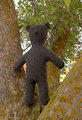
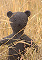
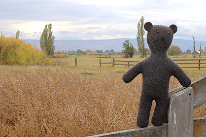

|
||
Premium Patterns Wintry Mix Mitts Love Bytes HawkeyeFree Patterns Kiddie Cadet Summerlin Ruffled Scarf Seamless DS Sock Simply Seamless Pouch Myriads of MushroomsExtras DIY Mitten Blocker Felt Patch Tutorial Yarn Dyeing Tutorial Needle Pouches Knitting Journal |
October 15, 2007 - Posted by Grace SchneblyA Bear for DadYesterday Si and I got back from our vacation in Ellensburg, WA. We were there visiting my parents, and it was so nice to see them since we haven’t been together since last Christmas. I didn’t get much knitting done there, but I did finish up a special project which I gave to my dad for his birthday while I was there. He had been asking for a knit teddy bear for a while now, so I took this opportunity to try out the Terra Bear pattern I got a while ago. Project Specs I found this bear on Ravelry when searching for new felted toy patterns. Once I saw this him, I immediately fell in love with his shape and serious expression. It reminded me of an old-fashioned type teddy bear, and I knew that I had to get the pattern. It’s not available online, which is kind of a bummer, but it was easy enough to email The Fiber Gallery and get one shipped out. With shipping it ended up costing $5.80, five dollars for the pattern and 80 cents for the shipping. The pattern is well written, and the instructions are clear and simple. I think that it would be a great beginner project especially since felting would hide any mistakes. The pattern uses a combination of knitting flat as well as in the round so there is no seaming until you have to close his stuffing hole. I did have to close up several holes under the arms and legs, as well as on the belly where I did my W&Ts, however it was really easy to do and they all disappeared after felting. The only thing the pattern was lacking was clear instructions on where to place the ears. I wanted to make sure that I got it right so I messaged Jessica Rose on Ravelry and she told me that she “placed the ears just slightly to the front. I spaced them so they would be as far apart as possible while still being on the top of his head.” She also sent me a link to a photo of her bear before felting which I found to be really helpful. Jessica was really nice, and she responded to my question very quickly! Before felting I used some waste cotton to seam the stuffing hole closed. This isn’t in the pattern, but I make a habit of doing this before I felt any knit toys. It is just to make sure that the two sides of the hole match up evenly. The Ecological wool felted really quickly into a nice firm fabric, but it also shed a lot!! Make sure to use a zippered pillow case to protect your washer. My bear felted after just one agitation cycle, although I could have probably let him go a little longer. There is still faint stitch definition left around his neck and at the ends of his arms and legs, but it isn’t too noticeable. For some reason after felting it looked like his head was turned slightly so that he is always looking to the left. I guess it just gives him personality! I kind of had a hard time with the finishing. For me it is always seems more difficult to put faces on dark colored animals. I used black Patons Merino Wool to embroider the nose and mouth, but next time I think I will try needle felting on the face. I am always better at needle felting than embroidery for some reason. I used 12 mm black acrylic safety eyes to finish off his face. I separated the Ecological Wool and used a single ply to seam up the stuffing hole; this way you know the seaming thread will always match the fabric. Like I said before, I gave the bear to my dad and he really liked him! He had been not-so-subtly dropping hints at wanting a teddy bear for a few months now, so I am glad it lived up to what he was imagining. I asked him what he would name the bear and he said Teddy, how original huh? Now I really want to make one for myself, and I've already bought a skein of Ecological Wool in Latte! Terra Bear is a great pattern created by an independent designer, and I’d highly recommend it to any knitter.  |
   Recent ReviewsRecent Posts
 Our Favorites
|
| © 2007 KathrynIvy.com | ||
{kind=link}
{kind=link}
{kind=link}